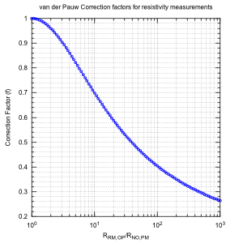

- Sun 08 January 2012
- Electronics
The van der Pauw Method is a technique commonly used to measure the Resistivity and the Hall Coefficient of a sample. A correction factor goes into calculating the resistivity as described in van der Pauw paper. A iterative method is generally used to calculate the correction factor and this correction factor is plotted in Figure 5 of van der Pauw paper
I reproduced the same figure below using fsolve function in octave.

This figure was produced by the octave code shown below.
The raw data can be downloaded from here
% This octave/matlab code calculates the correction factor,f as a function
% of Rmnop/Rnopm. This correcton factor will be used in calculation of sheet
% resistance/resistivity of thin films.
% Fore more details see the paper L. J. van der Pauw, A method of measuring
% the resistivity and hall coefficients of Lamellae of arbitrary shape,
% Philips Technical Review, Vol 26, 220.
clear all
close all
x = logspace(0,3,100);
for i=1:length(x)
Lp=@(f)cosh(((x(i)-1)./(x(i)+1))*(log(2)/f))-0.5*exp((log(2)/f));
F(i) = fsolve(Lp,0.5);
end
semilogx(x,F,'-o')
xlabel('R_{RM,OP}/R_{NO,PM}')
ylabel('Correction Factor (f)')
grid('minor');
title('van der Pauw Correction factors for resistivity measurements');
print('Van_der_Paw_correction_factor.png','-dpng','-r200','-S600,600');